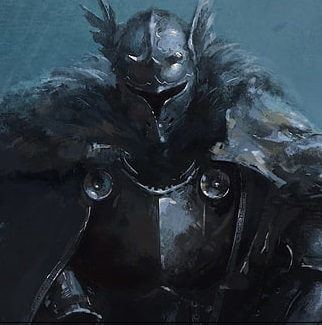

Yohan Kazuya Risteski
Front End Developer Student
Phone number: 076-9024922
E-mail: yohan.risteski97@gmail.com
Location: Gothenburg, Sweden
E-mail: yohan.risteski97@gmail.com
Location: Gothenburg, Sweden
Birth date:
1997/05/20
Driving License:
None
1997/05/20
Driving License:
None
Languages: from 0 to 10
English 10
Japanese 6
Macedonian 9
Swedish 7
English 10
Japanese 6
Macedonian 9
Swedish 7
Skills: from 0 to 10
Communication 8
Problem Solving 8
Flexibility 9
Communication 8
Problem Solving 8
Flexibility 9
Introduction
At the present, studying as a ''Front End Developer'' student in Medieinstitutet and looking for opportunities to increase my knowledge about coding as a programmer. I find the interaction between machine and people fascinating, and would love to learn more about it indepth. It is the reason I began to learn programming, to see how simple lines of code can bring forth amazing results. I am stil very new to programming and with time and practice, one will be rewarded for their efforts.Experience
June 2017 - August 2017 Östrasjukhuset - CaretakerI worked in the hospital as a caretaker/cleaner which involved taking care of the waste bins, toilets, patient rooms and halls.
Education
2004-2010: Primary school, Nikola Karev - Krushevo, Macedonia.2011-2014: Primary school, ISGR (International School of Gothenburg Region) - Sweden
2014-2016: Gymnasium, Hvitfeldtska, IB (International Baccalaureate) program - Sweden
2018-2020: Folk Secondary School, Arbetarrörelsens folkhögskola i Göteborg - Sweden
2020-present: Collage, Medieinstitutet, Front End Developer - Sweden